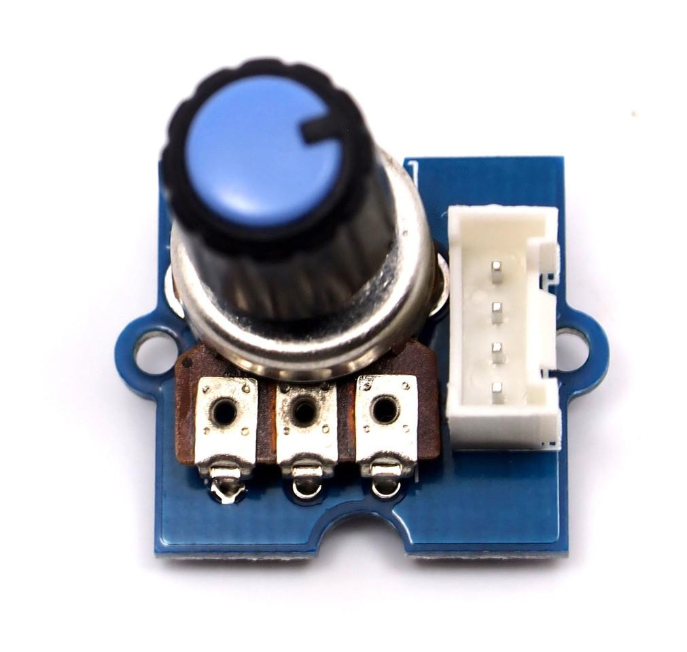
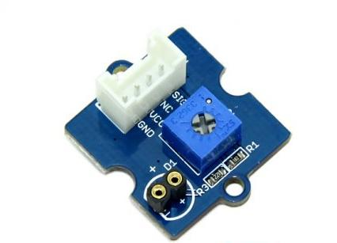
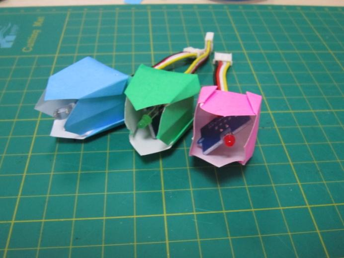
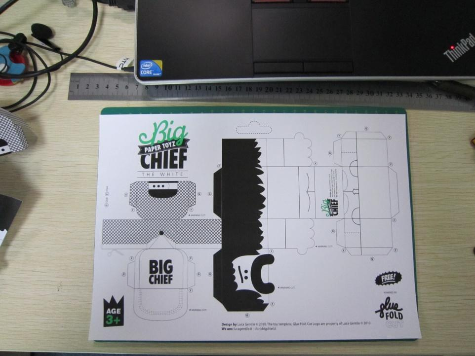

Grove is a modular electronics platform for quick prototyping that does not involve soldering or bread boarding. Simply plug the Grove modules into the Grove shield and leverage the example code provided for each Grove module. The Grove Starter Kit contains a multitude of sensors and actuators, so you can start messing around with projects.
Grove is a modulated, ready-to-use tool set. Much like Lego, it takes a building block approach to assembling electronics. Compared with the traditional, complicated learning method of using a breadboard and various electronic components to assemble a project, Grove simplifies and condenses the learning process significantly. The Grove system consists of a base shield and various modules with standardized connectors. The base shield allows for easy connection of any microprocessor input or output from the Grove modules, and every Grove module addresses a single function, such as a simple button or a more complex heart rate sensor. Each one comes with clear documentation and demo code to help you get started quickly.
If this is your first time to use an Arduino, you need to complete the following steps:
The download address of the Grove - Starter Kit Sketchbook is here.
Now you have got yourself ready for the Grove exploration.
First we start with the Grove base shield board. Grove - Base Shield is the new version of Electronic Brick Shield.The Basic Shield is compatible with Seeeduino v3.0 (168p and 328p), and Arduino UNO and Duemilanove. The are 16 Grove ports on the base shield, which can be divided into three different functional areas: digital ports(8),analog ports(4),I2C(4).
As photo shows there are have 8 digital ports, what are equivalent to digital pins 0 to through 9 on the Arduino Uno. Normally, they are used when reading a digital sensor that only outputs 0 or 1,or turning on or off an actuator.
On the left-hand side are four Grove ports for taking analog reading. Analog sensors can return readings ranging from 0 to 1023.Compared with digital sensors that only return 0 or 1, analog readings are more detailed and precise.
Below the digital ports are four I2C Grove ports. I2C is a low-speed bus protocol that transfers data via two wire : SCL and SDA . SCL is the clock line that synchronizes data transfer over the I2C bus, and SDA is data line.
For a detailed information on how to use your Grove – Base Shield ,you can go to Base Shield v2

This Grove enables you to set the color to whatever you like via the simple and concise Grove interface. It takes I2C as communication method with your microcontroller. So number of pins required for data exchange and backlight control shrinks from ~10 to 2, relieving IOs for other challenging tasks. Besides, Grove - LCD RGB Backlight supports user-defined characters.
Example
The example shows you how to print text on the screen and change the color of backlight. Find it via the path:
File -> Sketchbook -> Grove_RGB_Backlight_LCD -> HelloWorld

Tips
This is a 16x2 LCD screen. It is capable of displaying two rows of sixteen-character texts, supporting languages including English and Japanese. Aside from the built-in languages, you can have custom characters. You can build unique characters by defining their display patterns. You can find an example of making a custom character here:
https://github.com/Seeed-Studio/Grove_LCD_RGB_Backlight/archive/master.zip

Relay is a useful tool to magnify your Arduino’s control ability! Feed the control signal through the Grove interface, and relay will control the open/close of the external circuit that connected to the screw terminals. The voltage of the external circuit can run up to 220V! So grab this relay and start some really tough projects!
Example
The example shows you how to control relay by a button : File -> Sketchbook -> Grove_Realy.
Tips
Relay is an electronically controlled mechanical switch. The size of one varies according to its capability of carrying current. The bigger a relay (essentially just the plastic box part) is, the larger the current it can carry.
Please exercise great care when working with mains voltages – if in doubt contact a professional such as a licensed electrician for help.
For a detailed information on how to use your Grove – Relay ,you can go to Grove – Relay page

This is a simple yet enjoyable Grove to use. The piezo can be connected to digital outputs, and will emit a tone when the output is high. Alternatively it can be connected to an analog pulse-width modulation output to generate various tones and effects.
Example
You can use the code for Grove – Button to make the buzzerbeep when you press the button. However ,Grove – Buzzer can be much more fun – it can play songs!This is a brief example from Oomlout.com, playing you a household nursery rhyme – “Twinkle Twinkle Little Star”
Find the example via the path below:File -> Sketchbook -> Grove_Buzzer
This is a brief example from Oomlout.com, playing you a household nursery rhyme – “Twinkle Twinkle Little Star”
Tips
How Piezo buzzer works? Usually there are two ceramic wafers in each Piezo buzzer. When voltages are given to them, they attract or reject each other. The air vibration caused by the shake of these wafers emits sound. When the shaking frequency changes the sound frequency will change alongside.
For a detailed information on how to use your Grove - Buzzer ,you can go to Grove - Buzzer page
The Sound sensor module is a simple microphone. Based on the amplifier LM358 and the electret microphone, it can be used to detect the sound strength of the environment.
Example
The code for the Grove – Sound Sensor can be used to control an LED light whose brightness reflects the intensity of ambient sound.
File -> Sketchbook -> Grove_Sound_Sensor
Tips
The electric microphone collects sound intensity for all frequencies. And the potentiometer acts as the doorman. When you rotate it completely clockwise, it lets everything go through, and when you rotate it completely counterclockwise, none of it can go through.
For a detailed information on how to use your Grove - Sound Sensor ,you can go to Grove - Sound Sensor page
Grove - Touch Sensor enables you to replace press with touch. It can detect the change in capacitance when a finger is near by. That means no matter your finger directly touches the pad or just stays close to the pad, Grove - Touch Sensor would outputs HIGH.
Example
The code of Grove – Button works with this module. Find the example via the path below :File -> Sketchbook -> Grove_Buzzer
Tips
This is an alternative to the momentary button .Grove – Touch Sensor detects the change in capacitance in the circular region; the closer you finger is to the region, the larger the change in capacitance. Even if there is paper between your finger and the sensor, it will still function reliable.
For a detailed information on how to use your Grove - Touch Sensor ,you can go to Grove - Touch Sensor page

The potentiometer Grove produces analog output between 0 and VCC. The angular range is 300 degrees with a linear change in value. The resistance value is 10k ohms, perfect for Arduino use. This may also be known as a “rotary angle sensor”.
Example
The example shows you how to read the value of a rotary angle sensor:
File -> Sketchbook -> Grove_Rotary_Angle_Sensor
Tips
A rotary potentiometer looks very similar to a rotary encoder, but they are not the same. A Rotary potentiometer is essentially a slide potentiometer .It reflects the potion in an analog way just like a slide potentiometer does.
For a detailed information on how to use your Grove - Rotary Angle Sensor,you can go to Grove - Rotary Angle Sensor page
400px
Grove - Temperature Sensor uses a thermistor which returns the ambient temperature. Our board then converts this voltage value measured by an analog input pin to a temperature. The operating range is -40 to 125 degrees Celsius.
Example
The example shows you how to convert the raw output of the sensor onto temperatures .You can see data in Celsius in the serial monitor.
File -> Sketchbook -> Grove_Temperature_Sensor.
Tips
Grove – Temperature Sensor is used to detect environment temperature.
For a detailed information on how to use your Grove - Temperature Sensor,you can go to Grove - Temperature Sensor

Grove - LED is designed for the beginners of Arduino/Seeeduino to monitor controls from digital ports. It can be mounted to the surface of your box or desk easily and used as pilot lamp for power or signal.
Example
This example we make an LED light with breathing effects:
File -> Sketchbook -> Grove_LED
Tips
We prepare three colors of LED bulbs for you, you can get the color you want by changing the LED on the tiny Grove – LED Socket .LEDs have an cathode on the flat side of the bulb, and a anode on the round side of the bulb. The anode needs to be installed corresponding to the ‘+’ sign on the seat for the LED to work properly.
For a detailed information on how to use your Grove - LED,you can go to Grove - LED page
The light sensor, also known as the light dependent resistor (LDR). Typically, the resistance of the light sensor will decrease when the ambient light intensity increases.
Example
This example will turn on an LED when the light intensity falls below the preset threshold:
File -> Sketchbook -> Grove_Light_Sensor
Tips
The output of the analog light sensor ranges from 0 to 1023, but the output is not linear with respect to the ambient light intensity.
For a detailed information on how to use your Grove - Light Sensor,you can go to Grove - Light Sensor

This new version of button Grove module contains one independent button, which are configured with pull-down resistor – ready for use with our microcontrollers as digital input. The button signals the SIG wire,NC is not used on this Grove module.
Example
This example shows you how to turn on or off an LED by this button.
File -> Sketchbook -> Grove_Button
Tips
“Momentary” means the button rebounds after pressed .This button output HIGH when pressed, and LOW when released.
This is an actuator whose position can be precisely controlled.
Example
We prepared an example of how we use a potentiometer to control the position of the servo:
File --> Sktechbook --> Servo
Tips
Grove – Servo has mounting hardware options for different purposes: you can use them to drive a small fan, lift an object, or mimic a clock hand.
Description
Would you like a cup of flowers to ease your exhausted heart? This project is made up of Grove – LED and one Grove – Touch Sensor. With the sensor being touched, those lovely LEDs will shine you a warm and comfortable light effect.
Materials List
Note: The number of LEDs is arbitrary. There are three of them contained in the basic kit. But you can increase or decrease it depending on the volume of your cup. I have a big cup here, so I added three more from our website.
Steps
1. Fold The Buds

Choose one flower pattern you like and follow its steps to create some of them. One Google search may help a lot in finding one. There are so many origami hobbyists and artists over the Internet who’d like to share their handcrafts.
I chose tulip here, but sunflower, rose and lily also sound great!
When folding the bud, you need to leave a small hole on its button for the Grove cable to go through.
2. Set Up
Connect the buds and the touch sensor onto the Grove – Base Shield with the 10cm Grove cable. And then upload the code to your controller.
void setup()
{
pinMode(2, OUTPUT);
pinMode(4, OUTPUT);
pinMode(6, OUTPUT);
pinMode(7, OUTPUT);
pinMode(11, OUTPUT);
pinMode(13, OUTPUT);
pinMode(9, INPUT); //pin of touch sensor
}
void loop()
{
int switchState = digitalRead(9);
if(switchState == HIGH)
{
digitalWrite(2, HIGH);
digitalWrite(4, HIGH);
digitalWrite(6, HIGH);
digitalWrite(7, HIGH);
digitalWrite(11, HIGH);
digitalWrite(13, HIGH);
}
else
{
digitalWrite(2, LOW);
digitalWrite(4, LOW);
digitalWrite(6, LOW);
digitalWrite(7, LOW);
digitalWrite(11, LOW);
digitalWrite(13, LOW);
}
delay(100);
}
3. Power Up & Settle Down
Use a portable 9V battery to provide power to the flowers and settle it down in the cup. Finished! Enjoy your cup of flowers!
(downloaded form think.bigchief.it)
Description
How do you say hello to a friend? Big Chief would say “what’s better than a shake?” When one of these Big Chief paper toys lean his back against the others, they will shake to say hi!
Materials List
Note: The number of LEDs is arbitrary. There are three of them contained in the basic kit. But you can increase or decrease it depending on the volume of your cup. I have a big cup here, so I added three more from our website.
Steps
1. Print It Out!

Choose one pattern you like over the Internet. Make sure there is enough room for a magnet or a magnetic switch plus a vibrator. Same as the origami flower above, you can find tons of them on the Internet.
2. Fill The Organs In
Focus when cutting the paper toys. Only in that way you can get a neat one. After that, time to fill some organs to them.
I pasted a magnet on the back of Big Cihef A(let’s call it this name!). I stuck it there with double-sided adhesive tape.
And for Big Chief B, I pasted a magnetic switch on his back, the same position as A, and a vibrator on his foots.
3. Glue Them Up
Carefully follow the instruction on the printed sheet. Plug the Grove cables into two Grove Modules we used in Big Chief B. Then you will get two cute paper toys like above.
4. Upload Program
Upload the code below to your Arduino. By doing this, you bring life to them.
void setup()
{
pinMode(11, INPUT);
pinMode(9, OUTPUT);
}
void loop()
{
int sensorState = digitalRead(11);
if (sensorState == 1) digitalWrite(9, HIGH);
else digitalWrite(9, LOW);
delay(100);
}
This documentation is licensed under the Creative Commons Attribution-ShareAlike License 3.0 Source code and libraries are licensed under GPL/LGPL, see source code files for details.
Copyright (c) 2008-2016 Seeed Development Limited (www.seeedstudio.com / www.seeed.cc)